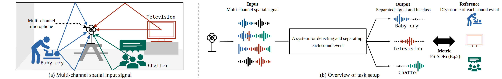
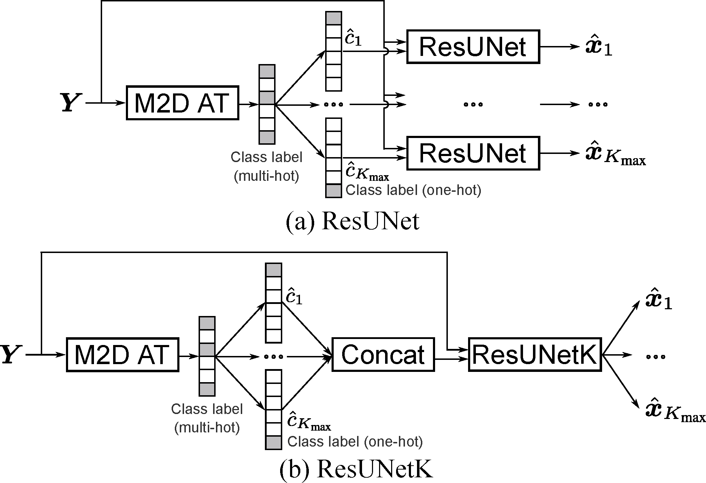

Sound separation and sound event detection in multichannel spatial sound scenes
Challenge has ended. Full results for this task can be found in the Results page.
Description
This Task, Spatial Semantic Segmentation of Sound Scenes (S5), aims to enhance technologies for sound event detection and separation from multi-channel input signals that mix multiple sound events with spatial information. This is a fundamental basis of immersive communication. The ultimate goal is to separate sound event signals from a multi-channel mixture into dry sound object signals and metadata about the object type (sound event class) and temporal localization. However, because several existing challenge tasks already provide some of the sub-set functions, this Task for this year focuses on detecting and separating sound events from multi-channel spatial input signals.
This Task requires systems to detect and extract sound events from multi-channel spatial input signals. The input signal contains, at most, three simultaneous target sound events plus optional multiple non-target sound events and non-directional background noise. Each output signal should contain one isolated target sound event with a predicted label for the event class. The task overview is shown in Fig. 1.

The Task Setting is formulated as follows:
Let \(\boldsymbol{Y} = [\boldsymbol{y}^{(1)},\dots, \boldsymbol{y}^{(M)}]^\top \in \mathbb{R}^{M \times T}\) be the multi-channel time-domain mixture signal of length \(T\), recorded with an array of \(M\) microphones, where \(\{\cdot\}^\top\) is the matrix transposition. We denote \(C=\{c_1, ...,c_K\}\) the set of source labels in the mixture, where the source count \(K\) can vary from \(1\) to \(K_\textrm{max}\). The \(m\)-th channel of \(\boldsymbol{Y}\) can be modeled as
where \(\boldsymbol{s}_k, \boldsymbol{s}_j\in\mathbb{R}^T\) are the single-channel dry source signal corresponding to the labels of target event \(c_k\) and interfering event \(c_j\), respectively. \(\boldsymbol{h}^{(m)}_k, \boldsymbol{h}^{(m)}_j\in \mathbb{R}^H\) is the \(m\)-th channel of the length-\(H\) room impulse response (RIR) at the spatial position of \(\boldsymbol{s}_k\) and \(\boldsymbol{s}_j\). \(\boldsymbol{n}^{(m)}\in\mathbb{R}^T\) is the \(m\)-th channel of the multi-channel noise signal. The wet source \(\boldsymbol{x}^{(m)}_k\in\mathbb{R}^T\) can be split into two components: the direct path and early reflections, \(\boldsymbol{x}^{(m,\textrm{d})}_k\in\mathbb{R}^T\), and late reverberation, \(\boldsymbol{x}^{(m,\textrm{r})}_k\in\mathbb{R}^T\), as
where \(\boldsymbol{h}^{(m,\textrm{d})}_k, \boldsymbol{h}^{(m,\textrm{r})}_k \in \mathbb{R}^H\) are the corresponding early and late parts of the RIR, respectively. We denote by \(N\) the number of sound event classes.
The goal of S5 is to extract all the single-channel sources \(\{\hat{\boldsymbol{x}}^{(m_\textrm{ref},\textrm{d})}_1, \dots,\hat{\boldsymbol{x}}^{(m_\textrm{ref},\textrm{d})}_{\hat{K}} \}\) at a reference microphone \(m_\textrm{ref}\) and their corresponding class labels \(\hat{C}=\{\hat{c}_1, \dots,\hat{c}_{\hat{K}}\}\) from the multi-channel mixture \(\boldsymbol{Y}\).
For clarity in the formulation, we could also drop some indices. Thus, the notations of \(\boldsymbol{x}^{(m_\textrm{ref}, \textrm{d})}_k\), \(\hat{\boldsymbol{x}}^{(m_\textrm{ref}, \textrm{d})}_k\), and \(\boldsymbol{y}^{(m_\textrm{ref})}\) become \(\boldsymbol{x}_k\), \(\hat{\boldsymbol{x}}_k\), and \(\boldsymbol{y}\), respectively.
Audio dataset
The list of target sound event classes (18) is:
- "AlarmClock"
- "BicycleBell"
- "Blender"
- "Buzzer"
- "Clapping"
- "Cough"
- "CupboardOpenClose"
- "Dishes"
- "Doorbell"
- "FootSteps"
- "HairDryer"
- "MechanicalFans"
- "MusicalKeyboard"
- "Percussion"
- "Pour"
- "Speech"
- "Typing"
- "VacuumCleaner"
The mixed sample will be synthesized with the following formula, equivalent to Eq. (\ref{eq1}).
where \(\boldsymbol{s}_k\) represents target event sound, \(\boldsymbol{s}_j\) represents interference (non-target) event sound, \(\boldsymbol{h}_k\) and \(\boldsymbol{h}_j\) represent corresponding RIR, and \(\boldsymbol{n}\) represents non directional noise.
Development set
A folder tree contains the following:
For generating the training and validation data:
- dry source sample files (Anechoic Sound Event 1K, newly recorded by NTT + FSD50K R1 + EARS dataset R2)
- RIR files (NTT recorded + FOA-MEIR R3)
- nondirectional background noise and interference event sound files (FOA-MEIR R3 + FSD50K R1 + ESC-50 R4 + DISCO R5 that are used in Semantic Hearing R6)
For checking the performance:
- pre-mixed file
- target sound event files
All files are converted in 32 kHz, 16 bit.
To place the complete set of data, follow the instructions in the dcase2025_task4_baseline.
During the training, the source samples and RIRs are processed using Spatial Scaper R7. A provided patch shall be applied to the original Spatial Scapar code. Follow the instruction provided in the baseline code.
Evaluation set
The evaluation set including soundscapes that are generated by mixing 1 to 3 samples from the 18 sound events classes recorded in an anechoic chamber convolves with newly recorded room impulse responses (RIRs). Note that since this dataset is designed for evaluation, it does not include the individual sounds, RIRs, or Noise of the sound event itself, only the soundscape after synthesis. The soundscapes are 10 seconds each and contain 2290 files. The first 1620 files (eval_0000.wav,....eval_1619.wav) will be used to calculate the ranking of this challenge. The remaining files are used for task analysis. All of the acoustic data and RIR formats included in this dataset are 32kHz/16bit. In the following part of this description, we will briefly summarize the recording of sound events and RIR.
data | └───eval_set | └───soundscape | | eval_0000.wav | : ... | | eval_2289.wav
Ground truth for evaluation set
This dataset provides the ground truth data for the DCASE2025Task4EvaluationDataset. This was made available to DCASE Challenge 2025 for further consideration by the participants. It contains the ground truth separation sounds for the target sound events in the 2290 mixtures of evaluation set.
The evaluator for this evaluation set is available from following github page.
External data resources
Based on the past DCASE's external data resource policy, we allow the use of external datasets and trained models under the following conditions:
-
Any test data in both development and evaluation datasets shall not be used for training.
-
Datasets, pre-trained models, and pre-trained parameters on the "List of external data resources allowed" can be used. The List will be updated upon request. Datasets, pre-trained models, and pre-trained parameters, freely accessible by any other research group before May 15, 2025, can be added to the List.
To add sources of external datasets, pre-trained models, or pre-trained parameters to the List, request the organizers by the evaluation set publishing date. We will update the "List of external data resources allowed" on the web page to give an equal opportunity to use them for all competitors. Once the evaluation set is published, no further external sources will be added, and the List will be locked on June 1, 2025.
| Dataset name | Type | Added | Link | Comments |
|---|---|---|---|---|
| YAMNet | model | 01.04.2025 | https://github.com/tensorflow/models/tree/master/research/audioset/yamnet | |
| PANNs: Large-Scale Pretrained Audio Neural Networks for Audio Pattern Recognition | model | 01.04.2025 | https://zenodo.org/record/3987831 | |
| OpenL3 | model | 01.04.2025 | https://openl3.readthedocs.io/ | |
| VGGish | model | 01.04.2025 | https://github.com/tensorflow/models/tree/master/research/audioset/vggish | |
| COLA | model | 01.04.2025 | https://github.com/google-research/google-research/tree/master/cola | |
| BYOL-A | model | 01.04.2025 | https://github.com/nttcslab/byol-a | |
| AST: Audio Spectrogram Transformer | model | 01.04.2025 | https://github.com/YuanGongND/ast | |
| PaSST: Efficient Training of Audio Transformers with Patchout | model | 01.04.2025 | https://github.com/kkoutini/PaSST | |
| BEATs: Audio Pre-Training with Acoustic Tokenizers | model | 01.04.2025 | https://github.com/microsoft/unilm/tree/master/beats | |
| AudioSet | audio, video | 01.04.2025 | https://research.google.com/audioset/ | |
| FSD50K | audio | 01.04.2025 | https://zenodo.org/record/4060432 | eval\_audio shall not be used |
| ImageNet | image | 01.04.2025 | http://www.image-net.org/ | |
| MUSAN | audio | 01.04.2025 | https://www.openslr.org/17/ | |
| DCASE 2018, Task 5: Monitoring of domestic activities based on multi-channel acoustics - Development dataset | audio | 01.04.2025 | https://zenodo.org/record/1247102#.Y_oyRIBBx8s | |
| Pre-trained desed embeddings (Panns, AST part 1) | model | 01.04.2025 | https://zenodo.org/record/6642806#.Y_oy_oBBx8s | |
| Audio Teacher-Student Transformer | model | 01.04.2025 | https://drive.google.com/file/d/1_xb0_n3UNbUG_pH1vLHTviLfsaSfCzxz/view | |
| Effective Pre-Training of Audio Transformers for Sound Event Detection | model | 16.05.2025 | https://github.com/fschmid56/PretrainedSED | |
| AudioSep | model | 19.05.2025 | https://github.com/Audio-AGI/AudioSep | |
| AudioSep (checkpoint) | model checkpoint | 19.05.2025 | https://huggingface.co/spaces/Audio-AGI/AudioSep/tree/main/checkpoint | |
| TUT Acoustic scenes dataset | audio | 01.04.2025 | https://zenodo.org/records/45739 | |
| MicIRP | IR | 01.04.2025 | http://micirp.blogspot.com/?m=1 | |
| FOA-MEIR | IR | 01.04.2025 | The data related to the Room IDs of 68, 69, 85, and 86 are in the DEV set. | |
| EARS | Audio | 01.04.2025 | ||
| DISCO | Audio | 01.04.2025 | ||
| ESC-50 | Audio | 01.04.2025 |
Download
DCASE 2025 S5 development set
This contains sound event source and Room Impulse Response (RIR) files for generating training and validation data, as well as test samples and Oracle separation targets for sanity checks of performance.
DCASE 2025 S5 evaluation set
This contains evaluation test mixture samples for the challenge submission. There are 2290 pre-mixed WAV files.
data | └───eval_set | └───soundscape | | eval_0000.wav | : ... | | eval_2289.wav
Task setup and rules
The participants are required to process sound mixtures, identify the sources in the mixture that are in the list of target sound classes defined in the Audio dataset' section, and output the source signal for each identified source.
The number of target sound events in a mixture is [1, 2, or 3], while the number of interference sound events is [0, 1, or 2].
The performance will be evaluated using the class-aware signal-to-distortion ratio improvement (CA-SDRi) metric shown in theEvaluation metricsection. Some other metrics shown in theAdditional informative metrics` section will also be calculated.
The Task rules are as follows:
- Participants are allowed to submit up to 4 different systems.
- Participants are allowed to use external data for system development.
- Data from other task is considered external data.
- Embeddings extracted from models pre-trained on external data is considered as external data
- Datasets and models can be added to the list upon request until May 15th (as long as the corresponding resources are publicly available).
- The external dataset used during training should be listed in the YAML file describing the submission.
- Manipulation of provided training data is allowed.
- Participants are not allowed to use audio from the pevaluation sets of the follwoing datasets: Disco, EARS, ESC-50, FSD50k and Semantic Hearing.
Submission
All participants should submit:
- The zip file includes audio files in "*.wav" format, containing the results of their separation with the evaluation set (\(EVAL_{test}\)). The separated audio files should follow the submission naming rules.
- A text file contains the Google Drive link of the zip files of the separated audios.
- A CSV file containing the calculated scores for the separation results of the development set (\(DEV_{test}\)).
- Metadata for their submission ("*.yaml" file), and
- A technical report for their submission ("*.pdf" file)
We allow up to 4 system output submissions per participant/team. Each system's metadata should be provided in a separate file containing the task-specific information. All files should be packaged into a zip file for submission. Please make a clear connection between the system name in the submitted metadata (the .yaml file), submitted system outputs (the .zip files), and the technical report (the .pdf file). For indicating the connection of your files, you can consider using the following naming convention:
Naming rule for the output (there will also be a bash script that creates the zip file for submission)
Naming rules | └───[Author]_[Affiliation]_task4_[Submission number]_out.zip │ └───[Author]_[Affiliation]_task4_[Submission number]_out │ │ └───eval_out │ │ │ eval_0000_[EventClass1].wav │ │ │ eval_0000_[EventClass2].wav │ │ │ eval_0001_[EventClass1].wav │ │ :
This information is also available in the example submission package.
Evaluation
Evaluation metric
A class-aware metric has been newly defined to evaluate systems' output. This metric evaluates both the sound sources and their class labels simultaneously.
The main idea is that the estimated and reference sources are aligned by their labels, with the waveform metric being calculated when the label is correctly predicted, i.e., \(c_k \in C \cap \hat{C}\). In cases of incorrect label prediction, penalty values are accumulated. We define a class-aware signal-to-distortion ratio improvement (CA-SDRi) metric as
where \(| C \cup \hat{C} |\) is the length of the set union. The metric component \(P_{c_k}\) is calculated as
where the SDRi is calculated as
\(\mathcal{P}^\textrm{FN}_{c_k}\) and \(\mathcal{P}^\textrm{FP}_{c_k}\) are the penalty values for false negative (FN) and false positive (FP), both set to \(0\), indicating that incorrect predictions do not contribute to any improvement in the metric.
Additional informative metrics
The following informative metrics will be calculated:
- PESQ (or POLQA) for speech and PEAQ for other signals will be used to provide additional information related to perceptual quality.
- Accuracy, Recall (True Positive Rate: TPR), Precision and F1 score, as well as False Positive Rate (FPR).
Additional example separation results processed by the submitted systems will be shown.
Ranking
The ranking of the systems will be determined with the class-aware signal-to-distortion ratio improvement (CA-SDRi) metric defined in Eq. (\ref{eq2}).
Additional informative results, including PESQ and PEAQ scores and some example separation results (wave files), will be present but not counted for the Ranking.
Results
This table shows the performance of each system in the evaluation set. Here we pick only one of the systems submitted by each team with the best CA-SDRi. Complete results and technical reports can be found in the results page.
| Submission Information | Evaluation Set | Test (Development) Set | |||||
|---|---|---|---|---|---|---|---|
| Submission Code |
Technical Report |
Official Team Rank |
CA-SDRi (eval) |
Label Prediction Accuracy (eval) |
CA-SDRi (test) |
Label Prediction Accuracy (test) |
|
| Bando_AIST_task4_2 | Bando_2025_t4 | 5 | 7.55 | 49.51 | 13.31 | 64.07 | |
| Choi_KAIST_task4_3 | Choi_2025_t4 | 1 | 11.00 | 55.80 | 14.94 | 61.80 | |
| Wu_SUSTech_task4_submission_2 | FulinWu_2025_t4 | 3 | 9.73 | 51.54 | 14.00 | 59.80 | |
| Morocutti_CPJKU_task4_2 | Morocutti_2025_t4 | 2 | 9.77 | 61.60 | 15.04 | 77.07 | |
| Baseline_task4_ResUNetK | 8 | 6.60 | 51.48 | 11.09 | 59.80 | ||
| Park_GIST-HanwhaVision_task4_4 | Park_2025_t4 | 6 | 6.69 | 47.22 | 13.22 | 76.53 | |
| Qian_SJTU_task4_1 | Qian_2025_t4 | 4 | 7.84 | 47.72 | 14.38 | 73.93 | |
| Stergioulis_UTh_task4_submission_1 | Stergioulis_2025_t4 | 7 | 6.60 | 51.48 | 11.12 | 60.67 | |
| Zhang_BUPT_task4_1 | Zhang_2025_t4 | 9 | 3.84 | 22.41 | 11.78 | 65.47 | |
Baseline system
The task organizers provided a baseline system proposed in the paper. The system is based on the combined structures of the Masked Modeling Duo (M2D) R8 for audio tagging and ResUNet R9 for separation. Fig. 2 shows two variants of the baseline: (a) ResUNet and (b) ResUNetK.

The code is available at the following link:
Acknowledgement
This work was partially supported by JST Strategic International Collaborative Research Program (SICORP), Grant Number JPMJSC2306, Japan.
This work was partially supported by the Agence Nationale de la Recherche (Project Confluence, grant number ANR-23-EDIA-0003).
Citation
If you are participating in this Task or using the baseline code, please cite these two papers below.
Task description paper
Masahiro Yasuda, Binh Thien Nguyen, Noboru Harada, Romain Serizel, Mayank Mishra, Marc Delcroix, Shoko Araki, Daiki Takeuchi, Daisuke Niizumi, Yasunori Ohishi, Tomohiro Nakatani, Takao Kawamura, and Nobutaka Ono. Description and discussion on dcase 2025 challenge task 4: spatial semantic segmentation of sound scenes. 2025. URL: https://arxiv.org/pdf/2506.10676v1, arXiv:2506.10676v1.
Description and discussion on DCASE 2025 challenge task 4: Spatial Semantic Segmentation of Sound Scenes
Baseline system paper
Binh Thien Nguyen, Masahiro Yasuda, Daiki Takeuchi, Daisuke Niizumi, Yasunori Ohishi, and Noboru Harada. Baseline systems and evaluation metrics for spatial semantic segmentation of sound scenes. 2025. URL: https://arxiv.org/abs/2503.22088, arXiv:2503.22088.
Baseline Systems and Evaluation Metrics for Spatial Semantic Segmentation of Sound Scenes
Reference
[R1] E. Fonseca, X. Favory, J. Pons, F. Font and X. Serra, "FSD50K: An Open Dataset of Human-Labeled Sound Events," in IEEE/ACM Transactions on Audio, Speech, and Language Processing, vol. 30, pp. 829-852, 2022, doi: 10.1109/TASLP.2021.3133208.
[R2] Julius Richter, Yi-Chiao Wu, Steven Krenn, Simon Welker, Bunlong Lay, Shinji Watanabe, Alexander Richard, Timo Gerkmann, "EARS: An Anechoic Fullband Speech Dataset Benchmarked for Speech Enhancement and Dereverberation," in Proc. Interspeech 2024.
[R3] Masahiro Yasuda, Yasunori Ohishi, Shoichiro Saito, "Echo-aware Adaptation of Sound Event Localization and Detection in Unknown Environments," in IEEE Int. Conf. Acoust. Speech Signal Process. (ICASSP), 2022.
[R4] Karol J. Piczak, "ESC: Dataset for Environmental Sound Classification," In Proceedings of the 23rd ACM International Conference on Multimedia (MM '15). Association for Computing Machinery, New York, NY, USA, 1015–1018, 2015. https://doi.org/10.1145/2733373.2806390
[R5] Furnon Nicolas. 2020. Noise files for the DISCO dataset. (2020). https://github. com/nfurnon/disco.
[R6] Bandhav Veluri, Malek Itani, Justin Chan, Takuya Yoshioka, Shyamnath Gollakota, "Semantic Hearing: Programming Acoustic Scenes with Binaural Hearables," in Proceedings of the 36th Annual ACM Symposium on User Interf, 2023.
[R7] I. R. Roman, C. Ick, S. Ding, A. S. Roman, B. McFee and J. P. Bello, "Spatial Scaper: A Library to Simulate and Augment Soundscapes for Sound Event Localization and Detection in Realistic Rooms," ICASSP 2024 - 2024 IEEE International Conference on Acoustics, Speech and Signal Processing (ICASSP), Seoul, Korea, Republic of, 2024, pp. 1221-1225, doi: 10.1109/ICASSP48485.2024.10446118.
[R8] D. Niizumi, D. Takeuchi, Y. Ohishi, N. Harada and K. Kashino, "Masked Modeling Duo: Towards a Universal Audio Pre-Training Framework," in IEEE/ACM Transactions on Audio, Speech, and Language Processing, vol. 32, pp. 2391-2406, 2024, doi: 10.1109/TASLP.2024.3389636.
[R9] Q. Kong, K. Chen, H. Liu, X. Du, T. Berg-Kirkpatrick, S. Dubnov, and M. D. Plumbley, "Universal source separation with weakly labeled data," arXiv preprint arXiv:2305.07447, 2023.